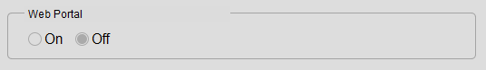
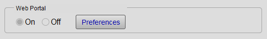
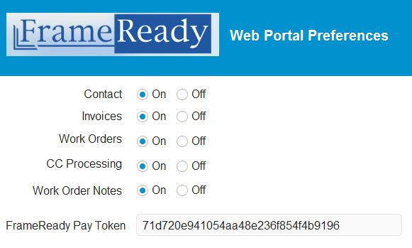
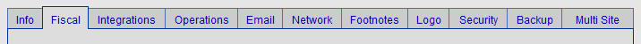
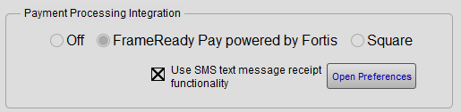
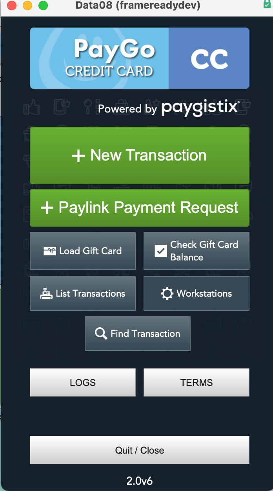
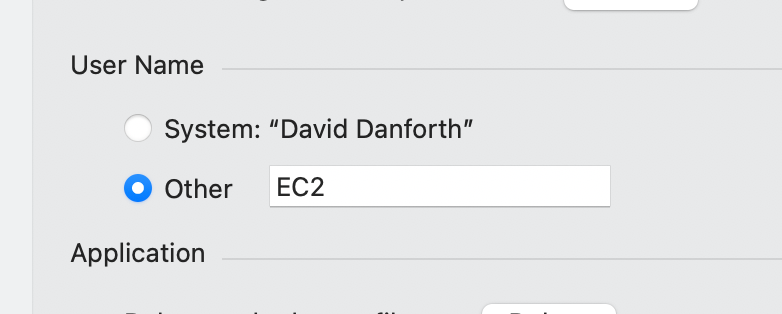
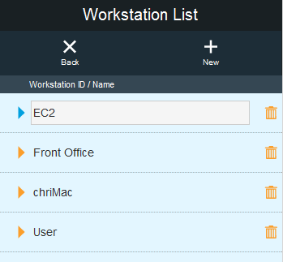
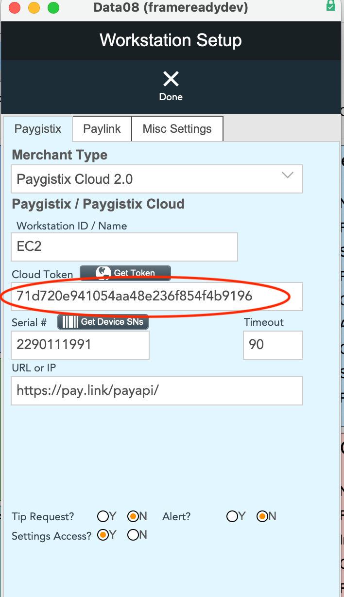

Web Portal
FrameReady now offers a web portal for your customers to log in and see their progress on Work Orders, leave notes and notifications for your office on Jobs, view their information in list and detail view and much more.
Web Portal Overview
-
FrameReady offers a Web Portal for your customers to log in and see their progress on Work Orders, leave notes and notifications for your office on Jobs, view their information in list and detail view, and much more.
-
It also offers your customers the ability to update their contact information for their record in FrameReady, such as adding new email addresses, setting a primary email address, adding phone numbers and shipping addresses and more.
-
It also offers customers the ability to view their invoices in list view and detail view, set the shipping address for their invoices and make credit card payments on their invoices directly over the web.
-
There is minimal set up to get the web portal working for your business. All you need is your own website for your company and access to that website hosting service, e.g. GoDaddy etc..
-
If you can provide our tech reps with FTP (file transfer protocol) access to your website as well as access to your DNS services, then we can get everything set up with your very own URL subdomain. For example, if your website domain name is http://awesomeframes.com, we would set up a subdomain pointing to the web files that would look something like http://frameready.awesomeframes.com
Initial Set Up in FrameReady
We understand that not every company is alike and some might want to offer their customers some features of the Web Portal but not others. This is why we have added a preferences section in FrameReady specifically for the Web Portal where you can pick and choose which features of the web portal that you would like to make available to your customers.
-
To access the preferences section of the web portal: on the Main Menu, click the Setup Data button and then open the Integrations tab.
-
In the middle of the integrations tab, in the "Web Portal" section, choose On.

-
When you turn the FrameReady Web Portal On, the Preferences button appears; click to open up the Web Portal preferences in the integrations file.

-
The "Web Portal Preferences" appears.

Web Portal Preferences Explained
Contact Radio Buttons
-
Turns the feature on or off.
-
After logging in, allows the customer to update their customer information; such as name, address, emails, addresses, phone numbers, shipping addresses and more.
Invoices Radio Buttons
-
Turns the feature on or off.
-
After logging in, allows the customer to view their invoices, set shipping addresses on their invoices and make credit card payments on their invoices.
Work Orders Radio Buttons
-
Turns the feature on or off.
-
After logging in, allows the customer to be able to see their Work Orders in production and make communication notes between the Work Order production team and themselves.
CC Processing Radio Buttons
-
Turns the feature on or off.
-
After logging in, allows customers to be able to make credit card payments on their Invoices in FrameReady directly over the Web Portal. This will still allow users to view their invoices and edit the shipping address if turned off but will take away the ability for the customer to make a payment on it.
Work Order Notes Radio Buttons
-
Turns the feature on or off.
-
After logging in, allows customers to be able to send notes back and forth in between the FrameReady Work Orders module from the Web Portal.
-
If this feature is turned off, the customer will still be able to view their Work Orders but will not have the ability to write a note on the Work Order or receive notes from the FrameReady Work Order team.
FrameReady Pay Token
Important: The FrameReady Pay Token field is populated after you have met with Fortis for your onboarding meeting and they have finished completing your setup of your integration. If this field is empty, do not continue.
-
This field is where you will paste your FrameReady Pay token that is stored in there Data08 file for your FrameReady Pay Credit Card Processing integration.
-
Follow the steps below to find this value in your FrameReady.
How to Obtain your FrameReady Pay Token
-
On the Main Menu, click the Setup Data button (top right).
-
Open the Fiscal tab.

-
In the "Payment Processing Integration" section, click the Open Preferences button for FrameReady Pay.

-
This will open up the Data08 companion file PayGoCC.

-
Click the Workstations button.
-
Locate the Workstation ID that matches your FileMaker Preferences User name. First, find your FileMaker User name by opening the FileMaker Preferences window:
Windows: In the file menubar, click Edit > Preferences...
Mac: In the FileMaker Pro menubar, click FileMaker Pro > Preferences...

-
Go back to the Web Portal Integrations screen and click on the matching Workstation ID to open the details view, e.g. EC2.

-
On the Workstation detail view, look for the Cloud Token field and copy it to the clipboard.
This field is populated after you have met with Fortis for your onboarding meeting and they have finished completing your setup of your integration.

-
As long as there is a value in the field and you have had your onboarding meeting with Fortis, then copy the value that is in the field.
Click the Done button (top).
Click the Back button (top left).
Click the Quit/Close button (bottom). -
Back in FrameReady, open the Integrations tab.
In the "Web Portal" section, click the Preferences button.
In the "Web Portal Preferences" window, click into the FrameReady Pay Token field and paste the Cloud Token that you just copied.
This will allow your FrameReady Web Portal to use your Fortis account to process and log the payments for your company properly.
© 2023 Adatasol, Inc.